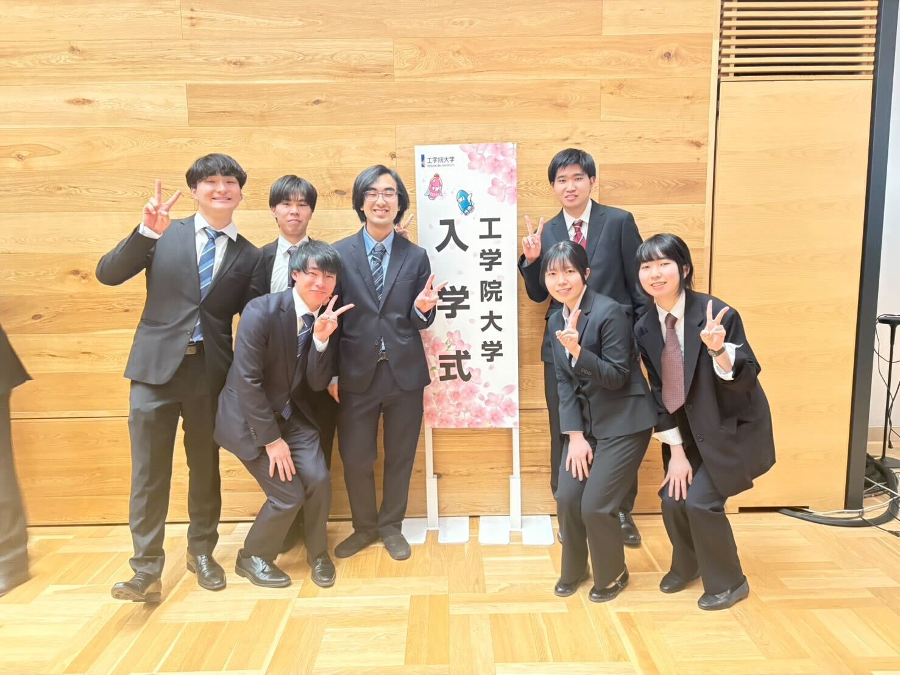

2026/04/03 入学式
2026年4月3日に入学式が行われました。工学院大学全体では1936名の学生が入学してくれたそうです。ユビキタスセンシング研究室としては、7名が修士に進学してくれました。修士2年間では就活に割かれてしまう時間も多く意外とあっという間に過ぎてしまいますが、良い成果を残せるように頑張りたいと思います。

2026年4月3日に入学式が行われました。工学院大学全体では1936名の学生が入学してくれたそうです。ユビキタスセンシング研究室としては、7名が修士に進学してくれました。修士2年間では就活に割かれてしまう時間も多く意外とあっという間に過ぎてしまいますが、良い成果を残せるように頑張りたいと思います。
